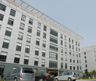

About SBM Portable Crusher
Shanghai Shibang Mining Equipment Co.,Ltd. is a new and high-tech corporation and has achieved CQC ISO9001:2000 . Now it is a international professional corporation and majors in the mining machine for construction ,and the research ,manufacturing and sales of the industrial grinding mill. Located in the beautiful Pudong New District ,Shanghai Shibang Mining Equipment Co.,Ltd. boasts the modernized offices,research center ,standard factory houses and a production base with more than 90,000 square meters . To provide the best production and service,our company always take the market demands as the creative motive and source. And Shibang will take the professional technology design ,high-quality production and perfect service as the promise to the market and society . Shibang is the first to adopt the the advanced CAD and computer stimulation system,which ensures the quality of design ,development ,and after-sales service .
With the independent import&export operation rights, Our company has set up the special international trade department to take charge of the export trading and the extending of the foreign market . Now,you can find Shibang products in over 30 countries and regions ,such as Australia ,U.S.,Italy,Singapore,India, Kazakhstan,etc. And with its high-quality products and perfect after-sales service ,it has obtained extensive welcome from home and abroad .
On the basis of the consistent absorbtion of the advanced experience , our company has formed a complete production chain with main products : crushing machinery ,grinding machinery,and auxiliary products: vibrating screen , vibrating feeder , and other associated equipments in recent years . And it has become a priority equipment in the field of the construction,and other high-grade railway and roadway . All kinds of the crushing and grinding mills we have produced feature the advantages of the creatitive design ,high- effiency ,and energy-saving . Our company always takes a leading role in the advanced technology , high performance , reliability ,and the after-sales maintenance.
Shibang Cone Crusher products include:
Our Service
Shibang people have created the brand “Shibang” with many years’ hard work and experience. Without satisfactory clients there will be no futures for the company. We must develop new technologies and new products for our clients, and make our popularity on a high level in this field; we must heighten our position and set a good example in the field. A group of experienced staffs are ready to serve you with enthusiasm at any moment!
Service concept:
All is for the clients and provide clients with high added value productsService orientation: Regard realization of choice service promise as the destination; implement the concept of high-quality, high-taste, high-efficiency and all-around-way service in the process from the design, manufacturing, management to the sale of products.
Service promise:
From the design, we will do every step carefully to satisfy clients to the best.
1.Pre-sale services:
Act as a good adviser and assistant of clients; enable them to get rich and generous returns on their investments.
(1) Select equipment model;
(2) Design and manufacture products according to clients’ special requirement;
(3) Train technical personnel for clients;
2.Services during the sale:
Respect clients; devote ourselves to improving the total value of clients.
(1)Pre-check and accept products ahead of delivery;
(2)help clients to draft solving plans.
3. After-sale services
Provide considerate services to minimize clients’ worries.
(1) Assist clients to prepare for the first construction scheme;
(2) Install and debug the equipment;
(3) Train the first-line operators on site;
(4) Examine the equipment regularly;
(5)Take initiative to eliminate the troubles rapidly at site;
(6) Distribute the guarantee fittings door-to-door;
(7)provide perfect service
(8)Provide technical exchanging;
(9)Provide maintenance for big items.
Portable Crusher Gallery


Portable crusher is developed according to novel series concrete crushing, stone crushing and rock crushing equipment’s design idea, which expands the concept field of coarse crushing and fine crushing. Its design idea is based on the client’s requirements, which clears faults of the crushing place, surroundings and the complex basic configurations. This series portable crusher plant really supply simpler, higher efficient and lower cost machines for clients.